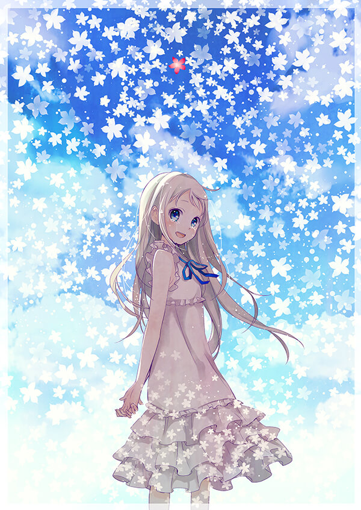

未闻花名
这是一部很好看的催泪番，随着年龄的增长，套路见多不怪，很难有东西能够让我感动，未闻花名做到了。
其实我根本不知道自己为什么而感动，但就是很想哭。未闻花名真的很好看，短短11集，你就记住了面码，
你就喜欢上了这个善良的女孩。个人觉得上大学看这部番刚刚好，年少时纯纯的友情，迷糊的爱情，很是让人回味。
很重要的一点是，未闻花名有个神ed【secret base ～君がくれたもの～】百听不厌。

龙与虎
现在难有如此清纯不做作的校园爱情番。里面的人都是普通人，你能在他们的身上找到自己的影子。
大河画的很可爱，钉宫的声音很迷人，人物情感自然流露，有种水到渠成的感觉。
朋友曾问我，还有没有女主像大河，男主像龙儿的番，我思考许久，发现过去没有，将来也难有。
佳作难得，龙与虎这种淡淡的感动太需灵感，很难有作者写出类似的作品。龙与虎是一部难得的好番，喜欢大河。
刀剑神域
刚下完1080p的高清资源，二周目结束再评价。
四月是你的谎言
四月里的人物形象有点奇特，第一眼我是不适应的，但看多了，有种独特的美感。
剧情里有音乐，有爱情，有友情，有亲情，情感为主，佐之以音乐，很有味道。
最值得一提的是，四月有个很棒的结尾，看完让人恍然大悟，瞬间升华了四月的格调，让人有看两遍的冲动。
不得不说，四月深深打动了我年少易感的心，好喜欢四月。
入梦落樱满熏香，梦醒犹记四月谎。
此生无悔入四月，来生愿做友人A。